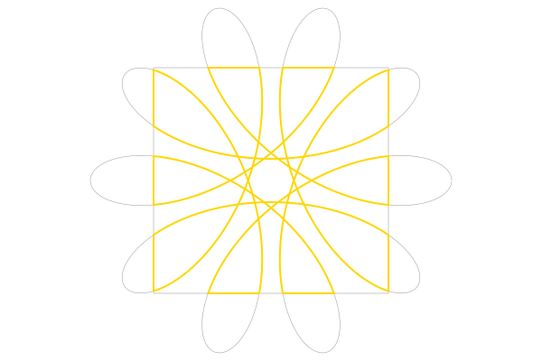
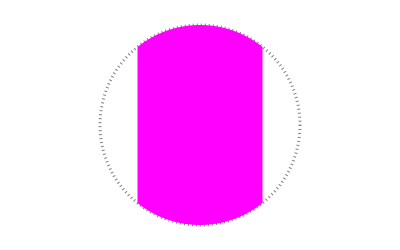
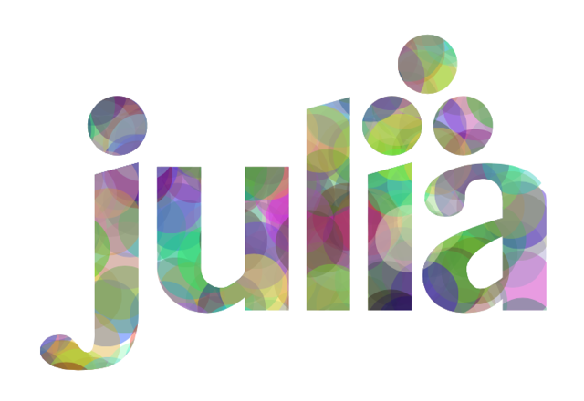
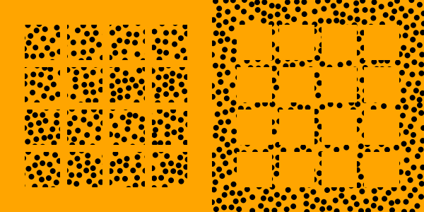

Clipping
There's two types of clipping in Luxor: polygon clipping and visual clipping.
Polygon clipping
Use polyclip to clip one polygon by another. The clipping polygon must be convex (every interior angle is less than or equal to 180°).
s = hypotrochoid(160, 48, 88, vertices=true)setline(0.5)sethue("grey60")poly(s, :stroke)c = box(O, 260, 250)poly(c, :stroke, close=true)sethue("gold")setline(2)poly(polyclip(s, c), :stroke, close=true)
See also [polyintersect()](@ref).
Visual clipping
Use clip to turn the current path into a clipping region. Subsequent graphics will be drawn if they're inside the region, and will not be drawn if they're outside the region. clippreserve keeps the current path, but also uses it as a clipping region. clipreset resets it. :clip is also an action for drawing functions like circle.
sethue("grey50")setdash("dotted")circle(O, 100, :stroke)circle(O, 100, :clip)sethue("magenta")box(O, 125, 200, :fill)
This example uses the built-in function that draws the Julia logo. The clip action lets you use the shapes as a mask for clipping subsequent graphics, which in this example are randomly-colored circles:

function draw(x, y) foregroundcolors = Colors.diverging_palette(rand(0:360), rand(0:360), 200, s = 0.99, b=0.8) gsave() translate(x-100, y) julialogo(action=:clip) for i in 1:500 sethue(foregroundcolors[rand(1:end)]) circle(rand(-50:350), rand(0:300), 15, :fill) end grestore()endcurrentwidth = 500 # ptscurrentheight = 500 # ptsDrawing(currentwidth, currentheight, "clipping-tests.pdf")origin()background("white")setopacity(.4)draw(0, 0)finish()preview()You can define a clipping region that excludes graphics by defining paths with holes.
In the following example, the drawing on the left defines a clipping region consisting of a 4×4 grid of squares, and the circles are drawn over the entire drawing, only if they're inside the squares. In the drawing on the right, the first enclosing path drawn forces the 16 subsequent squares to become holes in the clipping region. The circles are drawn only if they're outside the squares.
hcat( @drawsvg begin background("orange") setfillrule(:even_odd) for (pos, n) in Tiler(260, 260, 4, 4) @layer begin translate(pos) box(O, 50, 50, :path) end end clip() sethue("black") circle.(randompointarray(BoundingBox(), 10), 4, :fill) clipreset() end 300 300 , @drawsvg begin background("orange") # box forms the first part of the path box(BoundingBox(), :path) setfillrule(:even_odd) # squares form holes for (pos, n) in Tiler(260, 260, 4, 4) @layer begin translate(pos) box(O, 50, 50, :path) end end clip() sethue("black") circle.(randompointarray(BoundingBox(), 10), 4, :fill) clipreset() end 300 300)